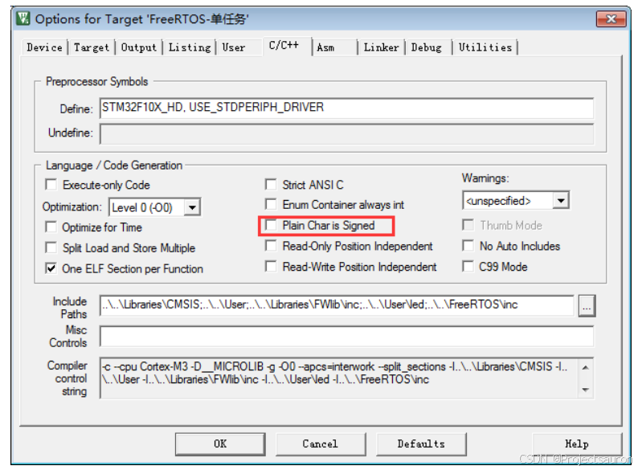

FreeRTOS 快速入门（一）之 FreeRTOS 的命名规则
[toc]
FreeRTOS 的命名规约非常独特，假若缺乏事先的了解，研读其源代码将使人感到困惑不解。然而，一旦熟悉了其命名规约，阅读就变得十分轻松了。
一、数据类型
在 FreeRTOS 中，使用的数据类型虽然都是标准 C 里面的数据类型，但是针对不同的处理器，对标准 C 的数据类型又进行了重定义，给它们取了一个新的名字，比如 char 重新定义了一个名字 portCHAR，这里面的 port 表示接口的意思，就是 FreeRTOS 要移植到这些处理器上需要这些接口文件来把它们连接在一起。
在 FreeRTOS 中，==int 型从不使用，只使用 short 和 long 型==。在 Cortex-M 内核的 MCU 中，short 为 16 位，long 为 32 位。
在 portmacro.h 文件中，有如下定义：
1 | /* Type definitions. */ |
其中：
- TickType_t：
FreeRTOS配置了一个周期性的时钟中断：Tick Interrupt- 每发生一次中断，中断次数累加，这被称为
tick count tick count这个变量的类型就是TickType_tTickType_t可以是 16 位的，也可以是 32 位的FreeRTOSConfig.h中定义configUSE_16_BIT_TICKS时，TickType_t就是uint16_t，否则TickType_t就是uint32_t- 对于 32 位架构，建议把
TickType_t配置为uint32_t
- BaseType_t：
- 这是该架构最高效的数据类型
- 32 位架构中，它就是
uint32_t - 16 位架构中，它就是
uint16_t - 8 位架构中，它就是
uint8_t BaseType_t通常用作简单的返回值的类型，还有逻辑值，比如pdTRUE/pdFALSE
在编程的时候，如果用户没有明确指定 char 的符号类型，那么编译器会默认的指定 char 型的变量为无符号或者有符号。正是因为这个原因，在
FreeRTOS中，我们都需要明确的指定变量 char 是有符号的还是无符号的。在Keil 中，默认 char 是无符号的，但是也可以配置为有符号的，具体配套过程如下：

二、变量名
每个变量名都有前缀来表示它是什么类型的数据，前缀见下表：
| 变量名前缀 | 含义 |
|---|---|
| c | char |
| s | int16_t，short |
| l | int32_t，long |
| x | BaseType_t，其他非标准的类型：结构体、task handle、queue handle 等 |
| u | unsigned |
| p | 指针 |
| uc | uint8_t，unsigned char |
| pc | char指针 |
三、函数名
函数名包含了函数返回值的类型、函数所在的文件名和函数的功能，如果是私有的函数则会加一个 prv（private）的前缀。
特别的，在函数名中加入了函数所在的文件名，这大大的帮助了用户提高寻找函数定义的效率和了解函数作用的目的，具体的举例如下：
例如：
| 函数名前缀 | 含义 |
|---|---|
| vTaskPrioritySet | 返回值类型：void 在 task.c 中定义 |
| xQueueReceive | 返回值类型：BaseType_t 在 queue.c 中定义 |
| pvTimerGetTimerID | 返回值类型：pointer to void 在 tmer.c 中定义 |
四、宏
宏均是由大写字母表示，并配有小写字母的前缀，前缀用于表示该宏在哪个头文件定义，如下例：
| 前缀 | 宏定义的文件 |
|---|---|
port (例, portMAX_DELAY) |
portable.h |
task (例, taskENTER_CRITICAL()) |
task.h |
pd (例, pdTRUE) |
projdefs.h |
config(例, configUSE_PREEMPTION) |
FreeRTOSConfig.h |
err (例, errQUEUE_FULL) |
projdefs.h |
这里有个地方要注意的是信号量的函数都是一个宏定义，但是它的函数的命名方法是==遵循函数的命名方法==而不是宏定义的方法。